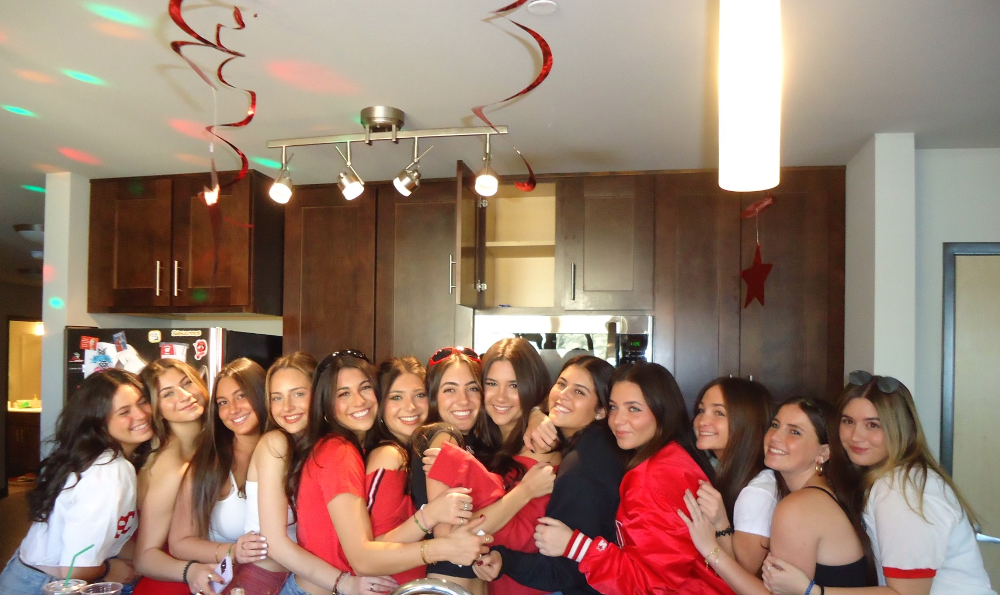

<!DOCTYPE html>
<html>
	<head>
		<title>Dylan Ettinger's Life</title>
		<link rel="stylesheet" href="stylesheet3.css">
</head>
<body>

</body>
</html>

<head> 
<title>Dylan Ettinger's Life</title>


</head>
	<body>
		<header>
			<h1>About Me<h1>
			<h2>The Life of Dylan Ettinger<h2>	

			<nav>
				<ul>
					<li><a href="index.html" >Home</a><li>
					<li><a href="family.html" >Family</a><li>
					<li><a href="friends.html" >Friends</a><li>
					<li><a href="food.html" >Food</a><li>	
				</ul>
			<nav>
		<section>
			<main>
				<p> To me, friendships are one of the most important things in life. I am lucky enough to have 12 best friends here at college, thanks to UW! Although I have many other friends outside of this special group, I have a different connection with them. I am very lucky to have them.</p>
			<main>
			
			<article>
				 
			<main>
				<p>Here are all my friends and I!</p>

				<p>Names in order (left to right): Sarah, Sydney, Lauren, Olivia, Me, Emily, Dylan, Cara, Aly, Jordyn, Riley, Carly, Maggie</p>
			
			<main>

			</article>	
		<section>
		
		<footers>
			<p>Copyright @2023</p>
		<footer>
		
</html>

		<header>		


		</header>
	</body>

</html>
